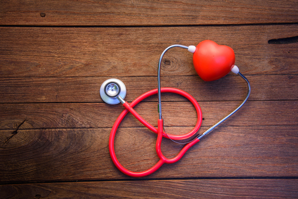
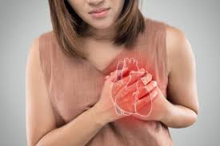
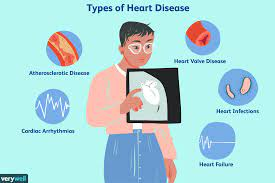

Prince
TOP 20 HEALTHY HEART TIPS BY CARDIAC SPECIALISTS
Here is a list of top 20 tips by Cardiac Specialists on how to keep the Heart healthy:
Control your portion sizes:
How much you eat is just as important as what you eat. Overloading your plate, eating too fast, and eating until you feel stuffed can lead to eating more calories than you need will not only impact your waistline but also your heart. So control your portions & eat mindfully without distractions – TV, newspaper, mobile.
1. Cut down on salt intake:
Eating a lot of salt can contribute to high blood pressure, a major risk factor for heart problems. Reducing salt intake is an important part of a heart-healthy diet. Also, keep a watch on ready to eat foods as they generally have high sodium content.
2.Be Smoke-free:
Quitting smoking is one of the best things that you can do for your heart. Did you know that smoking increases your risk of developing heart disease by 2 to 4 times! Quit smoking today & enjoy an active and healthy life.
.jpg)
3.Avoid smoke-filled environment:
4.Do you have partners or friends who smoke? Did you know that exposure to secondhand smoke is as harmful and significantly increases the risk of a heart attack! Avoid such environments and encourage your near & dear ones to quit.

5.Manage Blood Pressure:
High blood pressure is the no. 1 risk factor for brain stroke and a major risk factor for almost half of all heart diseases. Keep your blood pressure under check by eating a healthy diet, avoiding excess salt, being physically active, and maintaining healthy body weight.
6.Manage Diabetes
Did you know that people with type 2 diabetes are two to four times more likely to develop heart disease or have a brain stroke compared with those who don’t have diabetes. So make positive lifestyle changes and keep your diabetes under control. One of the most important things you can do if you have diabetes is to maintain a healthy weight.
7.Be physically active:
A healthy heart needs physical activity. Engage in at least 30 minutes of physical activity – 5 times a week. Walk, jog, do yoga, join a gym, play your favorite sport but do something!
8.Achieve and maintain a healthy Body Mass Index (BMI):
BMI or Body Mass Index is based on your height and weight. If your BMI is in the range of 25 to 30, then you are overweight. If the BMI is greater than 30, then you are considered obese. Being obese brings with it a lot of health complications, hence it is important for you to maintain a healthy BMI if you want to avoid health complications.
9.Central Obesity or Excess belly fat:
Excess belly or stomach fat is extremely unhealthy & increases the risk of diabetes & heart problems. Even if you are normal-weight people but have excess belly fat, it can increase the risk of health problems. To know if you fall under this category measure your waist to hip ratio. If it is greater than 0.9, then you should make lifestyle changes to lose fat.
10.Power of sleep:
We’ve all done it – skipped sleep for late-night parties, work, etc. However, before you make this a regular habit, consider this: research has indicated that people who slept less than six hours a day, had a 48 percent increased risk of developing heart disease.
11.Avoid Junk food:

To protect your heart, avoid junk food and anything that basically comes out of a packet like biscuits, chips, etc. as these are high on salts, trans fats, and preservatives. Eat wholesome foods like fruits, vegetables, nuts, lean protein, etc.
12.Importance of Oil:
It is said that Extra virgin Olive oil is good for the heart. Having said that it should be used in salads & dips only and not for cooking or deep frying. Use regular oils and change your oil every 6 months for better overall health as each oil has its own set of nutrients.
13.Know your numbers:
Regular blood pressure, blood sugar, and cholesterol checks are important to keep the heart-healthy. High blood pressure and cholesterol are silent killers which means that you won’t know you have them unless you get tested. So, go for regular cardiac check-ups especially after 35 years of age.
14.Family history matters:
If in your family, any female below 45 years and any male below 50 years has had a heart attack, then your risks of getting a heart problem increases. So get evaluated by a cardiac specialist regularly to know your heart condition as prevention is better than cure.
15.Check food label:
hese days we are eating a lot of packaged foods and all packaged foods come with a food label or a nutrition label. Always check the nutrition label to check the calories, salt & sugar content as well as saturated fats in the food you are about to consume. Being fully aware of what you are eating will go a long way in maintaining a healthier body and mind.
16.Find out if you have diabetes:
India is known as the diabetes capital of the World. Millions of people don’t know that they have this condition. That’s risky because, over time, diabetes can affect your heart or kidneys too. Your doctor should test your blood sugar if you are 40 or older, if you are pregnant, or if you’re overweight and have other risk factors for diabetes.
17.Breakup with long periods of sitting:
Break up long periods of sitting and stand or walk while doing things like talking on the phone or watching TV. This is great for your heart, for your weight and overall health.
18.Cut out sugary beverages:
Sugary beverages like colas, packaged fruit juices are just empty calories with little or no nutritional content. Their regular consumption is linked to diabetes and weight gain – both of which increase your risk of heart problems. So in theses summers whenever you are thirsty avoid colas and packaged juices. Instead opt for healthier alternatives like plain water, nariyal pani, chaas, etc.
19.Unwind whenever you get the opportunity:
High level of stress is bad for the heart. Not only can severe stress and anxiety directly harm the heart, but it also leads to other behaviors such as smoking, alcohol & bingeing on comfort food. Practice stress reduction through yoga, meditation, and listening to soothing music.
20.Take the stairs:
Modern conveniences such as cars, lift, and escalators have drastically reduced the amount of exercise we get on a daily basis. To counteract this, take the stairs at every opportunity while at work, shopping in malls, etc.
Dr. Nikhil Choudhary, Consultant – Cardiology – Adult, Narayana Multispecialty Hospital, Jaipur
Prince
follow us on :-